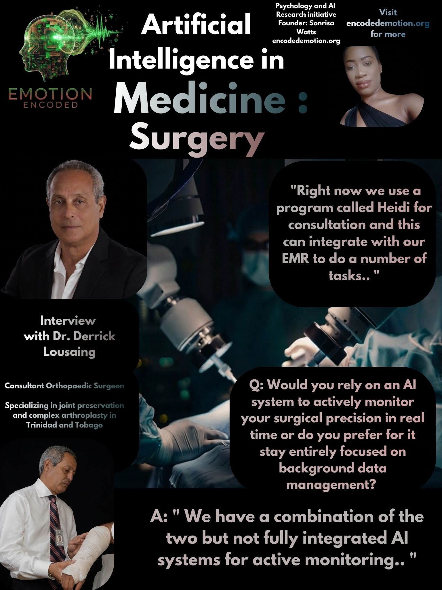

This brief looks at how human surgical skill and software tools fit together in the operating room, based on a talk with Mr. Derrick E. Lousaing.
Mr. Derrick E. Lousaing is a Consultant Orthopaedic Surgeon with over thirty-five years of experience, specializing in joint preservation, lower limb reconstruction, and complex hip and knee replacement. He co-founded the Fracture and Orthopaedic Clinic in Trinidad and Tobago, pioneered regional joint replacement methods, and does about 150 total joint replacements a year. He focuses heavily on ongoing training, exact surgery, and clinical education as a top authority in Caribbean orthopaedic care.
Do you use any AI tools like ChatGPT or Gemini for any part of your work right now?
"Yes we use a program called Heidi for consultation and this can integrate with our EMR to do a number of task."
This shows that clinics use tech mainly to save time on paperwork and charting rather than for medical choices. The clear boundary here is that doctors are open to using software for repetitive administrative bottlenecks, like handling notes and records, but they keep consumer chat tools away from actual patient care and medical diagnosis to avoid safety risks.
Would you rely on an AI system to actively monitor your surgical precision in real time, or do you prefer it to stay entirely focused on background data management?
"We have a combination of the two but no fully integrated AI system for active monitoring."
In joint and bone surgery, mistakes are not an option. While software can handle background numbers, the actual physical work relies entirely on the human surgeon's hands, feel, and experience. Systems cannot match real-time physical adjustments yet, meaning high-stakes procedures still depend completely on human judgment and spatial awareness.
If an error is about to happen mid-procedure, would you want the system to interrupt you with a warning, or quietly record details for later review?
"If we were using it then we would prefer the system to interrupt an error before it occurs."
Logging a mistake after it happens does nothing for the patient on the table. Any tool used in surgery has to stop problems right away to be useful. If a system only records issues for later, it provides zero immediate help during a critical moment, placing huge demands on software reliability so it does not cause dangerous false alarms.
Do you worry that relying too much on AI will make younger surgeons lose their touch in emergencies?
Emotion Encoded analysis says If trainees lean too much on software to fix problems, they lose the ability to handle sudden crises on their own. Decades of surgical skill come from learning how to deal with high-pressure moments manually, so letting algorithms take over too early creates a major generational threat to basic problem-solving and emergency readiness.
RESEARCH IMPLICATIONS FOR EMOTION ENCODED
The talk with Mr. Lousaing shows that while doctors are fine with using tech for office notes and admin tasks, they draw the line at letting software run the actual surgery. Real-time tools need to act as immediate safety nets to keep human skills sharp, ensuring the next generation keeps their hands-on expertise intact.
Sonrisa Watts // Emotion Encoded // 2026